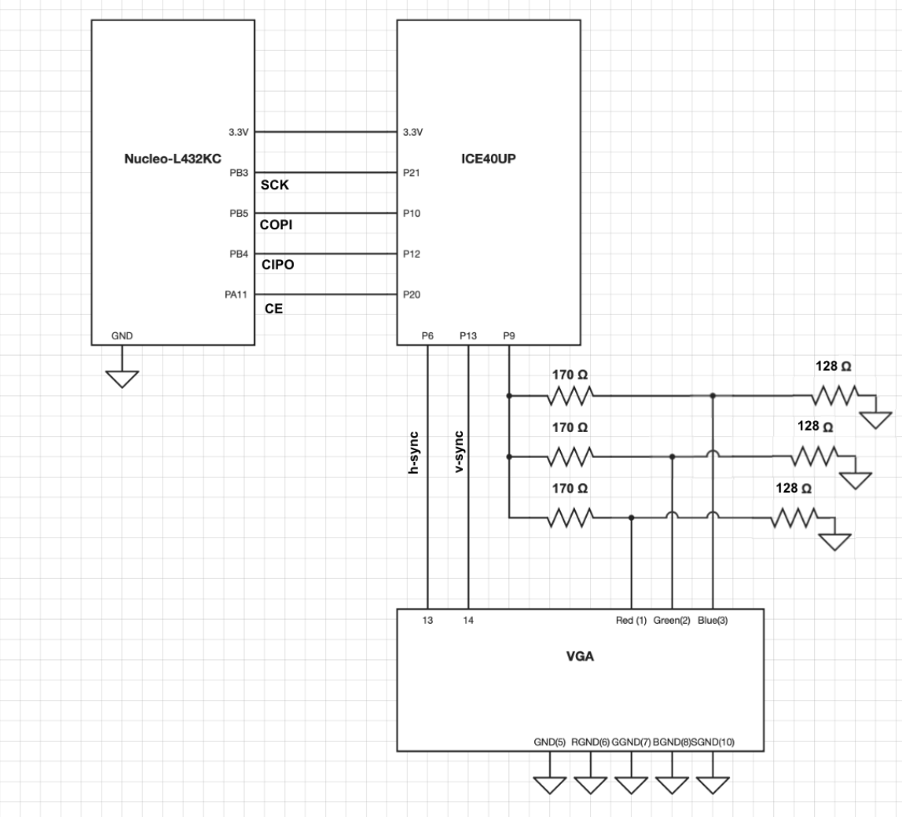

Project Portfolio: Microcontroller–FPGA Tetris System
MicroPs_Project Hardware/Software Co-Design Portfolio
Abstract
This project implements a complete Tetris game system using a dedicated microcontroller (MCU) and an FPGA working together over a well-defined hardware interface. The FPGA implements the real-time game logic and VGA video pipeline, while the MCU provides hardware random number generation and a control channel for the game. The final system drives a VGA display at 640×480@60 Hz, accepts input from a PS/2 keyboard, and renders a flicker-free Tetris game with proper line clears and loss detection.
The main goals of this project were to:
- Demonstrate hardware/software co-design using a discrete MCU and FPGA.
- Implement a fully hardware Tetris pipeline on the FPGA with clean, parameterized RTL.
- Meet real-time display and responsiveness requirements (>~20 Hz update, no visible flicker or ghosting).
- Extend the course reference designs with new hardware modules including on board MCU entropy-based randomization and FPGA PLL module.
Proficiency & Technical Information
System Overview
At a high level, the system consists of:
- A microcontroller (MCU) responsible for:
- Generating hardware random numbers used to select new Tetris pieces.
- Sending configuration and Keyboard commands over SPI.
- An FPGA responsible for:
- VGA timing generation at 640×480@60 Hz using an on-chip PLL.
- Tetris game state (piece movement, rotation, collision detection, line clears, scoring).
- Telemetry overlay and debug visualization on top of the game board.
Communication between the MCU and FPGA uses a custom SPI-based protocol, with the MCU as master. The FPGA exposes memory-mapped registers for commands, random-number injection.
Microcontroller Design Overview
The microcontroller acts as a control and randomness front-end for the FPGA:
Hardware Random Source The MCU uses its on-chip hardware RNG (or a pseudorandom generator seeded by a hardware source, depending on the specific device) to generate random values that select the next Tetris piece type and orientation. This prevents predictable piece sequences and keeps gameplay fair.
SPI Command/Status Channel The MCU is the SPI master, periodically transmitting:
- New random seeds or piece IDs.
- Receives and decodes USART PS/2 inputs from keyboard interrupts.
- Sends random seed and keyboard input over SPI to FPGA
On the STM32L432KC we use the built-in true random number generator (RNG) peripheral instead of a software pseudo-random generator. This hardware block continuously produces 32-bit entropy samples derived from an analog noise source inside the chip. In our firmware, we enable and configure the RNG once at startup, then each time the game needs randomness we read a fresh 32-bit word, compress it down to a 3-bit value (g_random3), and pack that into the SPI word sent to the FPGA along with the keyboard state. The FPGA then uses those 3 random bits to drive Tetris gameplay randomness (for example, piece selection), while the MCU handles all interaction with the RNG hardware.
The RNG peripheral is designed as a live entropy source suitable for building NIST-compliant deterministic random bit generators (DRBGs). In our project, we use it directly as a high-quality entropy source, which means each game session gets a genuinely non-repeatable sequence of pieces without us having to manage seeding or maintain a software RNG state.
The SPI protocol is hardware-friendly: fixed-width frames with an opcode, optional payload, and parity/error-check bits. whenever the MCU sends a game update to the FPGA over SPI, it packs these three random bits into the same SPI word that carries the current keyboard state. On the FPGA, that 3-bit field is decoded and used to drive Tetris gameplay randomness (for example, piece selection or spawn behavior). Keeping the random logic on the MCU lets us change or debug the RNG algorithm entirely in C without touching the Verilog design, while still delivering compact, timing-friendly random signals to the FPGA each frame.
FPGA Design Overview
The FPGA implements all real-time, cycle-accurate tasks in the system:
Clocking and PLL
An on-chip PLL generates the required pixel clock for 640×480@60 Hz VGA from the internal high-speed oscillator. VGA timing is synchronized to this clock domain. The rest of the system runs off the internal high-speed oscillator with gating from a slower game clock as well as move inputs (detailed later). A synchronization module is used to load a new frame from the gamestate logic when VGA and game logic have both declared they are ready for a new frame.
VGA Timing Generator
A parameterized VGA controller (e.g., vga_pkg::VGA_640x480_60) generates hsync, vsync, and (x, y) pixel coordinates for each active pixel. The controller:
- Encodes the full VGA timing (visible region, front/back porch, sync pulse).
- Can be reparameterized for other resolutions by changing a single configuration record.
Tetris Game Logic
The core game hardware includes:
Piece State Machine Tracks the active tetromino’s type, rotation state, and
(x, y)position. It advances in response to:- Gravity ticks (drop timer).
- Left/right and movement commands (triggered upon receiving SPI transaction).
- Rotation commands (triggered upon receiving SPI transaction).
Collision Detection Uses the current board representation and a series of shifted piece masks to detect collisions with:
- Walls and floor.
- Existing locked blocks.
Moves and rotations are only committed if they result in a legal position.
Line-Clear Detection and Board Update Each frame, the hardware scans board rows to detect any that are fully occupied. When a full row is found:
- A
clearing_linesignal is asserted. - The row is cleared, and rows above shift downward (one row per update in the current design).
- The score and line counters are updated accordingly.
- A
Loss Condition and Reset If a new piece cannot be placed (because blocks already occupy its spawn region), the system enters a loss state. A reset command (from the MCU over SPI or from a dedicated key) clears the board and restarts the game.
Board Representation & Blitting
The game board is stored as a 2D grid (e.g., 10 columns × 20 rows). Supporting modules include:
piece_mask_generator: computes a local 6×6 window around the active piece, providing convenient access for boundary checks and neighborhood-based logic.blit_piece: overlays the active tetromino onto the fixed board state, computing board indices for each block in the 4×4 piece grid and combining them with the base state using simple bitwise operations.
This separation between fixed board and active piece enables clean rendering and simplifies the line-clear logic.
Input Handling (PS/2 Keyboard)
A PS/2 decoder samples the keyboard clock and data lines, decodes scan codes, and maps them to game commands:
- Left / Right movement
- Rotation
The decoder outputs debounced, single-cycle command pulses that the game state machine consumes, ensuring responsive but glitch-free behavior.
Telemetry and Debug Overlay
A telemetry_module renders text or numeric values into a reserved region of the screen. Internally the module converts these values into characters and overlays them after the game board is drawn, without affecting the board’s underlying representation.
This hardware overlay is extremely helpful for debugging timing issues and verifying state transitions.
Schematics and Block Diagram
- FPGA dev board power and IO pin assignments.
- MCU dev board connections.
- SPI, PS/2, and VGA connectors with signal names and reference designators.
- Any custom IO or adapter boards used.

 –>
–>
Hardware & Bill of Materials
Bill of Materials (BOM)
The table below lists the main hardware components used in the MicroPs system. Fill in the rows with your exact parts, quantities, and prices.
| Item / RefDes | Description | Qty | Unit Price (USD) |
|---|---|---|---|
| U1 | FPGA development board | 1 | - |
| U2 | Microcontroller development board | 1 | - |
| J1 | VGA connector (HD-15) | 1 | 14.26 |
| J2 | PS/2 connector | 1 | 9.36 |
| - | Ps2 Keyboard | 1 | (Stockroom) |
| - | VGA display | 1 | (Stockroom) |
Total project cost: 23.62
New Hardware
RTL Hardware Modules
In addition to the material covered in class, the project includes several new hardware modules:
- Custom SPI Core (
spi)- Implements an SPI slave interface tuned to the MCU’s clock rate and protocol.
- Includes parity or simple error checking before committing incoming data to registers.
- Exposes clean status and data-valid flags to the game logic.
- Piece Mask Generator (
piece_mask_generator)- Generates a 6×6 neighborhood window around the active piece, clamping out-of-bounds accesses.
- Simplifies collision and boundary logic while remaining synthesizable and efficient.
- Blit Piece (
blit_piece)- Computes the board indices for each block in the 4×4 tetromino grid.
- Overlays the active piece onto the static board state using logical operations, producing the rendered board for VGA.
- Line Clear Logic
- Detects full lines using row-wise reductions and asserts
clearing_line. - Shifts rows above a cleared row downward, one row per update cycle in the project’s implementation.
- Designed to be efficient and friendly to synthesis (using enables instead of large mux trees).
- Detects full lines using row-wise reductions and asserts
- Telemetry Overlay (
telemetry_module)- Parameterized in number of signals and bit-width.
- Renders debug information directly into the frame, making it easy to observe internal state without a logic analyzer.
New Physical Hardware
On the FPGA side, we extended the baseline course design by integrating the on-chip low-speed oscillator and a hardware PLL to generate a stable pixel clock for VGA output. This required configuring new clocking resources, managing clock domains, and verifying that the timing met VGA 640×480 @ 60 Hz requirements. We then routed these signals through custom VGA timing and pixel-generation modules to drive an external VGA display, which introduced a completely new output format compared to the standard lab exercises.
On the microcontroller side, we implemented two major features beyond the core course content: an internal hardware-based random source and a PS/2 keyboard interface. The internal random generator is used to provide non-deterministic, hardware-driven piece generation for the Tetris game, while the PS/2 interface allowed us to accept real-time player input using a standard PS/2 keyboard. Both of these features required new peripheral configuration, custom protocols, and additional firmware modules that go beyond the standard course material.
Results
Functional Results
The system achieves the core functional requirements of a Tetris-style game:
Hardware random from MCU New pieces are chosen based on MCU-generated randomness, avoiding obvious patterns.
Hardware PLL from FPGA The VGA pixel clock is generated by the FPGA’s PLL, producing a stable 640×480@60 Hz signal.
Display updates > 20 Hz The display runs at 60 Hz, so the visible game update rate is comfortably above the 20 Hz requirement.
No visible flicker or ghosting The design uses a consistent board representation and clean overlay of the active piece, so the display does not flicker or ghost between frames.
Correct block behavior
- Blocks clear when a line is fully filled.
- Lines above a cleared line shift downward.
- Blocks lower at a standard, controllable rate.
- New random blocks appear once the previous block settles.
- Game boundaries stop pieces from moving outside the playfield.
Player input and control
- The player can move and rotate pieces using a PS/2 keyboard.
- Commands are decoded and applied on the appropriate clock edges.
- The game resets correctly when the loss condition is triggered or when reset is commanded.
Quantitative Performance
You can fill in your actual numbers here once measured:
- Frame rate: 60 Hz VGA refresh (target).
- Approximate input-to-display latency: on the order of one frame period (dominated by the display).
- FPGA resource utilization:
- LUTs: 3861
- LUT Ripple: 74
- PFU Registers: 479
- IO Registers: 2
- IO Buffers: 11
- Clock frequency of main game logic:
HSOSC used as the global game logic flop clock at 48Mhz. Timing shows a slack of 5.809ns.
These metrics demonstrate that the design has comfortable timing margins, meets its refresh requirements, and fits within the available FPGA resources.
Design Tradeoffs and Commentary
Several design decisions improved performance and clarity:
- Single-clock-domain design with enables simplifies timing closure and avoids metastability issues.
- Parameterized modules (e.g., board dimensions, number of telemetry signals, VGA parameters) make the design reusable for other games or resolutions.
- Hardware-based line clear and score tracking eliminates the need for a software game loop, keeping the MCU simple and focused on randomness and control.
Code Repository
All project code (software and HDL) is hosted on GitHub:
- MicroPs_Project Repository: https://github.com/jacassidy/MicroPs_Project
The repository contains:
- FPGA RTL (SystemVerilog or Verilog modules for VGA, Tetris logic, SPI, PS/2, telemetry, etc.).
- MCU firmware source code and any supporting scripts.
- Simulation/testbench files as applicable.
- Project build files (e.g., synthesis, place-and-route, and programming scripts).
- A
README.mddescribing the main elements of the project and where they are found.
Throughout the code, comments document module intent, interfaces, and non-obvious implementation details to aid future readers and maintainers.
Team & Acknowledgements
Team Members
James Kaden Cassidy
Applied Mathematics in Computation, Harvey Mudd College Clay–Wolken Fellow, VLSI Lab
Kaden’s work centers on advancing open hardware. He is currently developing certification tests and hardware implementations of the RISC-V Vector Extension, contributing to the next generation of RISC-V processors.
Outside of research, he is an athlete on the CMS Track & Field team, competing in the hammer, shot put, and discus.
Kaden is passionate about hardware/software co-design and seeks opportunities combining processor architecture, systems engineering, and algorithmic performance.
Noah Fotenos
Engineering, Harvey Mudd College Clay–Wolken Fellow, VLSI Lab
Noah’s work centers on advancing open hardware. He is currently developing certification methodologies and verification test suite for the RISC-V Privilege Extensions, contributing to the next generation of RISC-V processors.
Outside of research, he is an athlete on the Claremont Cougars club Lacrosse team. A Residential life Mentor for new students. A “Muchachief” leader for the Department of Student Life for oncampus events. And Grutor for E85 Computer Engineering.
Acknowledgements
We gratefully acknowledge:
- Course instructor and staff, for providing reference designs, lab infrastructure, and guidance on the MCU and FPGA toolchains.
- Teaching assistants and classmates, whose feedback and debugging assistance were invaluable, especially for clocking issues, PS/2 decoding, and synthesis quirks.
- Open-source communities, whose documentation and example projects informed our VGA and PS2 interface(Ben Eater).
AI Usage
Artificial intelligence tools were used throughout the development of this project to support both hardware and software design tasks. AI was especially helpful during the implementation of the new PLL hardware module on the FPGA, where it accelerated debugging and clarified vendor-specific configuration details. It was also used extensively when writing and refining Verilog modules and their accompanying testbenches, as well as during the final cleanup of the microcontroller firmware.
While AI was generally accurate when provided with complete and precise context, we found it most effective as a correctness amplifier—helping verify logic, catch oversight errors, and suggest clearer structural patterns. As the project deadline approached and fatigue increased, we relied on AI to cross-check our reasoning and ensure that we were not introducing avoidable mistakes. Ultimately, AI served as a supplemental tool that improved workflow efficiency without replacing our judgment or engineering responsibilities.
References
References are presented in a consistent numbered format.
Tetris Overview “Tetris.” Wikipedia, The Free Encyclopedia. https://en.wikipedia.org/wiki/Tetris
VGA Timing Reference “640×480 @ 60 Hz VGA Signal Timing.” TinyVGA. https://tinyvga.com/vga-timing/640x480@60Hz
FPGA Family Datasheet Lattice Semiconductor. iCE40 UltraPlus Family Data Sheet. https://hmc-e155.github.io/assets/doc/FPGA-DS-02008-2-0-iCE40-UltraPlus-Family-Data-Sheet.pdf
Toolchain Documentation Lattice Semiconductor. Radiant Software User Guide and application notes for the chosen FPGA.
PS/2 Protocol Description Adam Chapweske. “The PS/2 Mouse/Keyboard Protocol.” https://computer-engineering.org/ps2protocol/
Course Materials Internal course notes and lab handouts for Microprocessors / Embedded Systems (MicroPs), including MCU–FPGA communication, VGA controller design, and PS/2 interface labs. https://hmc-e155.github.io/
Related FPGA Tetris Projects Various FPGA Tetris implementations used for conceptual inspiration and comparison of architectures.
Ben Eater. How does a PS/2 keyboard interface work? YouTube, 2019. https://www.youtube.com/watch?v=7aXbh9VUB3U
Ben Eater. Building logic for VGA timing signals (video card project). YouTube, 2015. https://www.youtube.com/watch?v=l7rce6IQDWs
Multimedia Documentation
Demo Video
A short video demonstrates the system running Tetris on the VGA display, showing:
- Stable 640×480@60 Hz video.
- Piece motion, rotation, and line clears.
- Hardware-generated random pieces and responsive keyboard control.
Photos
Photos of the final design help document the hardware:
- FPGA board connected to the VGA monitor.
- MCU board with SPI connection to the FPGA.
- Any custom PCBs or wiring harnesses.
- Close-up of the VGA output showing the Tetris game.